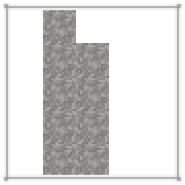
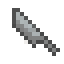
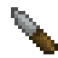
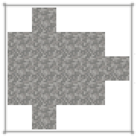
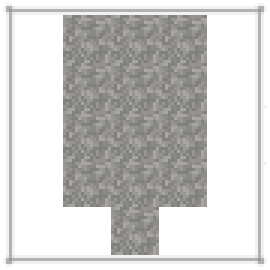
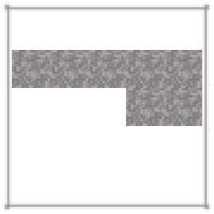
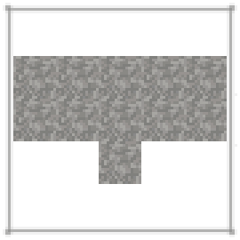
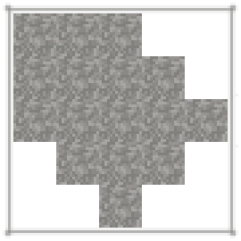

第一天
在群峦传说中，你最初能获得的资源只有那些散落在地上的木棍、树枝、和小石子。几乎所有气候中都会有这些资源。你可以按右键，或打破它们来把它们捡起来。
示例
多方块结构
一些散落的木棍和石头。
除了在地上收集木棍和小树枝外，还可以空手打碎树叶来获得木棍。在你收集了一些石头和木棍后，你就可以开始尝试石子塑形了。石子塑形是将两块石子互相敲击以将其中一块凿成特定形状的过程。首先你的手中应至少握住两块石子，然后对着空气按下右键就能打开塑形界面。

塑形界面。
想要塑形特定的物品，就必须通过点击塑形界面上的正方形石片来凿去不要的部分，直到形成所需的图案。例如将石片凿成右侧显示的图案就能做成石刀刃。注意！如果不小心凿掉了错误的部分，材料就被浪费掉了！
与制作配方一样，所需图案的位置对输出并不重要，并且一些配方具有多个有效的图案。

一把石刀刃，用各种不同的岩石都可以制作。




使用木棍或小树枝可以把任意的石制工具头组装成完整的工具。
石刀可以破坏植物来收获干草。

斧头可以砍倒整棵树, 包括树干和树叶. 但只有单独打碎树叶才能获得树苗和木棍.

铲子可以用来挖类似土壤材质的方块. 对草方块或泥土使用铲子也可以制造土径.

锄头是很有用的农业工具, 它也可以清理树叶或其他植物.

锤子可以当作造成打击伤害的武器, 但更重要的是, 它是开展冶金业的重要工具.

标枪可以像设计的那样投向目标, 也可以用作造成突刺伤害的近战武器.